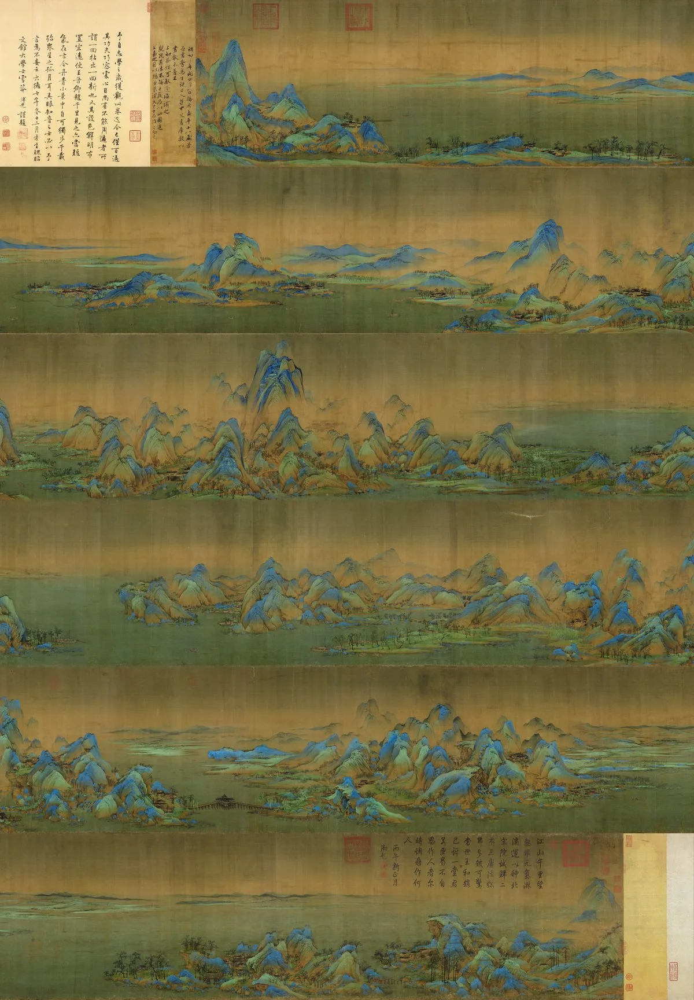
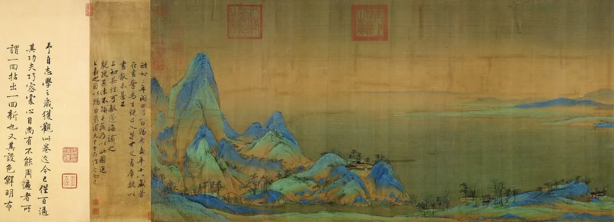
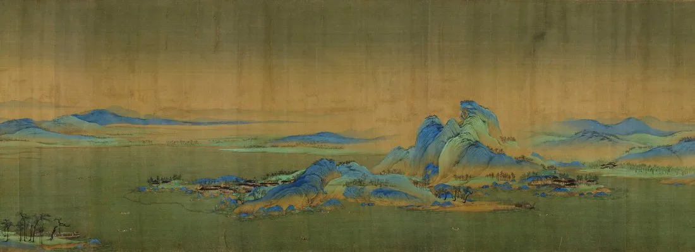
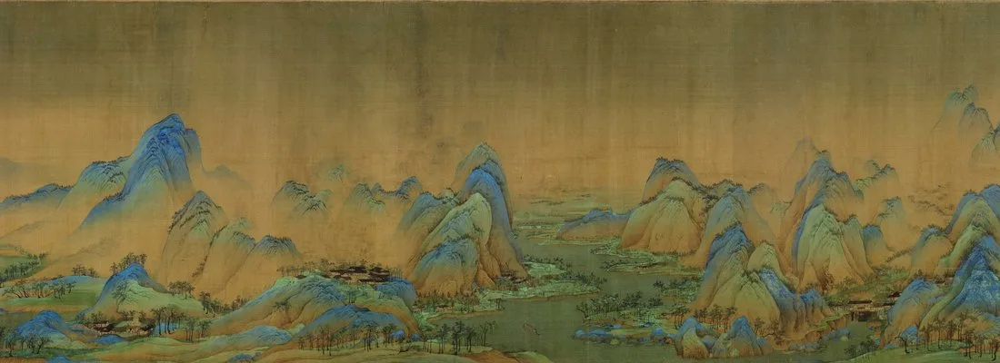
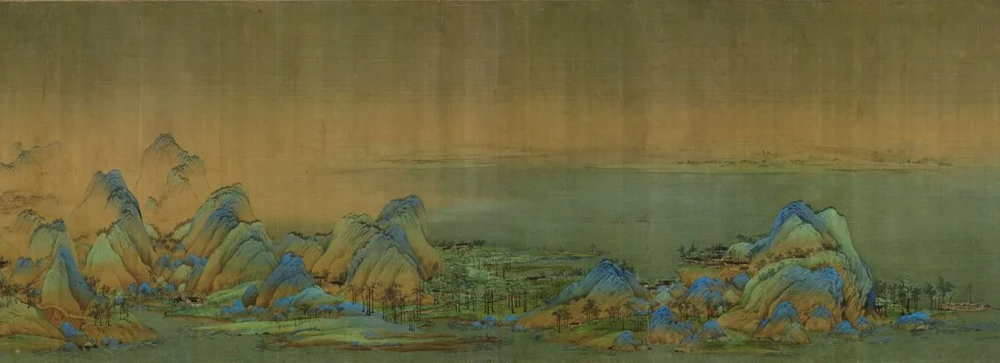
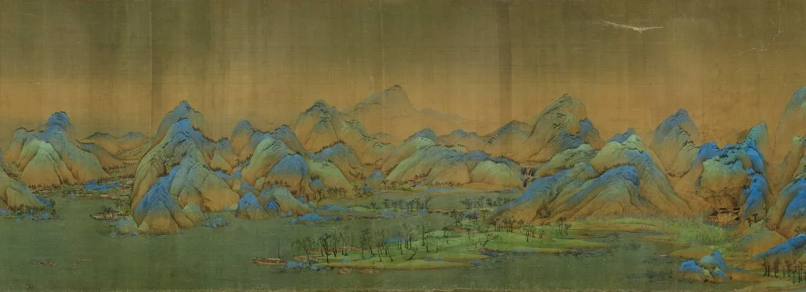
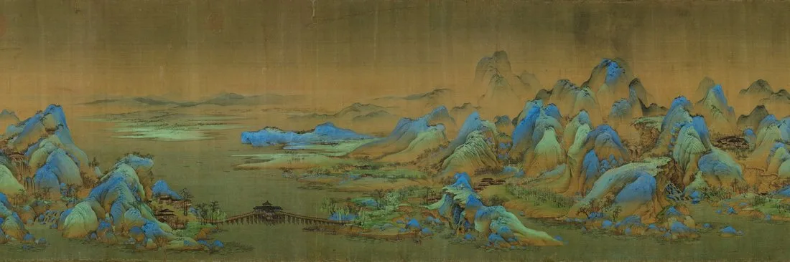
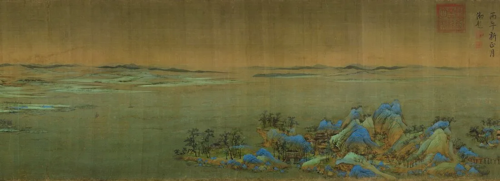
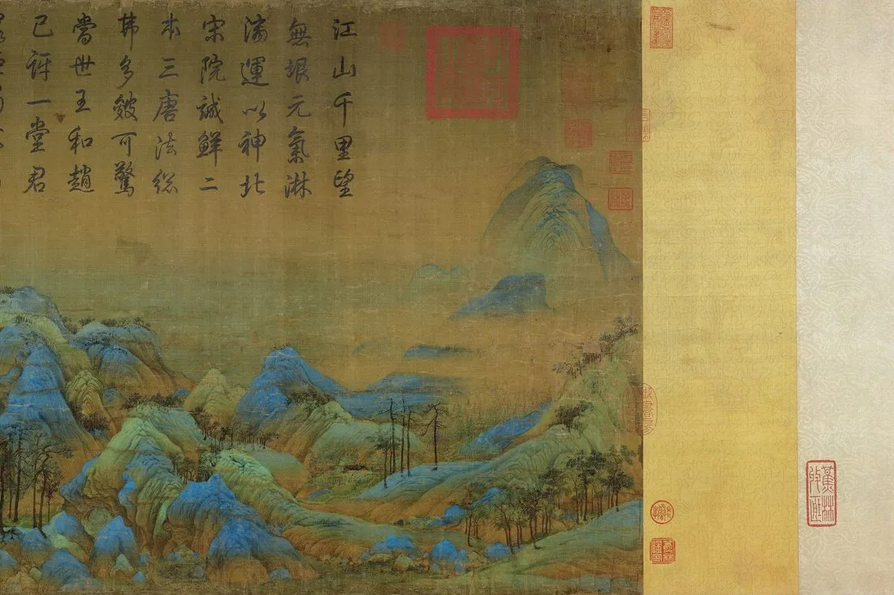

关于这幅近十二米长卷的作者，史料只有寥寥数语：王希孟，北宋徽宗朝的画学生，约十八岁画成此卷，此后便从历史中消失。一幅画，几乎是一个人的全部。
王希孟曾入徽宗主持的画学，得徽宗亲授笔法。政和三年（1113）前后，他以一卷青绿山水惊动宫廷——这便是《千里江山图》。
全卷以石青、石绿两种矿物颜料层层罩染，色泽灿烂如初；间以赭石打底、墨线勾勒，是唐代『二李』青绿传统在北宋的巅峰回响。
画成之后，王希孟便再无记载，年仅二十余岁便辞世。一幅十二米的江山，几乎耗尽了他短暂的一生。
—— 据卷后蔡京题跋与画史通行叙述
他用一种最『重』的颜色，留下了最轻、也最恒久的少年之气。
从起手江村到收束远岫：每一处，都是少年笔下的一抹青绿。

点击画面中的 ✦ 光点 查看细节 · 图片来源：Wikimedia Commons（公有领域）
一个少年、一年光景、一卷十一米的长绢——它几乎是『天才』这个词最具体的形状。
约 1113 · 汴京 画学
王希孟入徽宗画学，得皇帝亲授。在帝王亲自调教的天才班里，他是最被寄望的一个——十七八岁，已能驾驭巨幅。
➤1113 · 一卷写成
他以半年左右绘成此卷，石青石绿层层积染，气势连贯如一气呵成；完成后进呈御前，徽宗赐予权臣蔡京。
➤此后 · 人间再无希孟
画成不久，王希孟便英年离世，史料再无只字。一幅《千里江山图》，几乎成了他留给世界的全部回声。
石青石绿，贵比黄金。两种颜料取自蓝铜矿与孔雀石，研磨极细、层层罩染方能璀璨；在北宋，这意味着一笔下去，便是真金白银的消耗。
它曾被宋徽宗赐给蔡京。卷后蔡京题跋记其来历，使作者与年代得以确认；蔡京虽为权相，却因这段题字成了此卷流传的见证。
八百余年颜色如新。矿物颜料稳定不褪，使今天的我们仍能见到近千年前那一抹灼灼青绿——这是绢本设色罕见的长寿。
※ 王希孟生卒年与『十八岁画成』多据蔡京跋与后世题咏推知，细节略有出入；青绿颜料之珍贵为共识。
从江村到远岫：长卷用八段，走完一座江山的晨与暮。

长卷以平缓江村起势，先把人烟放进青绿山水，再引向后面的千岩万壑。

低伏峰峦以石青石绿罩染，是北宋青绿山水的典型骨架。

中段主峰以浓重石青层层积染，少年笔力在此尽显。

峰峦环抱的村落以纤细墨线界画而成，与山体松紧相生。

江流分合，水口以留白写就，千里奔流收于一方绢素。

近水村墟与渔舍再现，长卷首尾皆落于人烟。

洲渚林木以横点洒落，是长卷最安静的收束之笔。

最后一道远岫以淡青收笔，与起手江村遥相呼应。
青绿山水始于隋代展子虔，盛于唐代李思训、李昭道（『二李』）。王希孟以北宋的体量感重述此法，把宫廷的富丽推向极致。
蓝铜矿呈石青、孔雀石呈石绿，皆为天然矿物。研磨愈细、罩染愈厚，色泽愈见温润厚重——这是化学与笔法的双重工艺。
近十二米的横卷须边展边读，视点随江山推移而不固定；青绿在其上分段设色，使『千里』得以在一段段观看中徐徐展开。
王希孟的早慧与早归，使此卷自带传奇；它常被当作『天才』的注脚，也提醒人：有些作品，本就是为一个瞬间而存在的。
王希孟于北宋徽宗朝绘成此卷，绢本青绿设色，纵 51.5 厘米、横约 1191.5 厘米，后赐蔡京。
历经南宋、元、明内府与私家递藏，清代入内府，编入《石渠宝笈》。
清宫旧藏辗转归北京故宫博物院，与《清明上河图》等同列镇院名迹。
故宫『千里江山——历代青绿山水画展』引发观展热潮，此卷罕见展出，一票难求。
作为现存青绿山水的巅峰，它持续以『少年之笔、千年之色』惊动每一个走近的人。